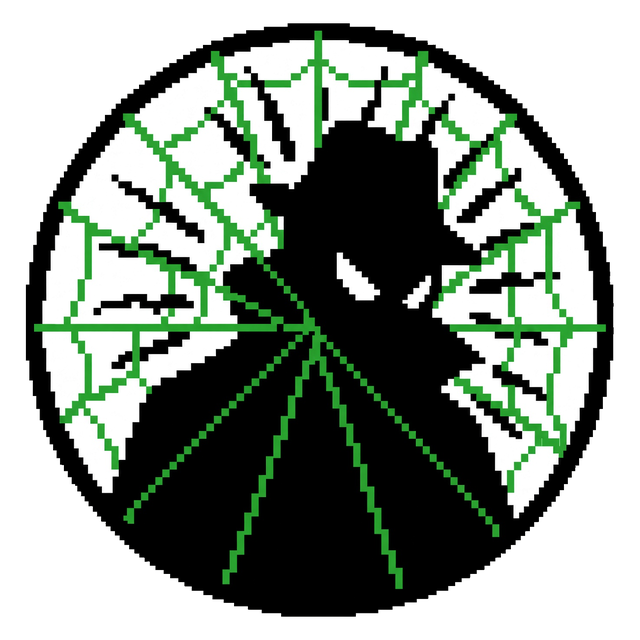

FILE: OP-ANANZI-FANGSVER: 3.0STATUS: ACTIVE
ANANZI
F.A.N.G.S // v3.0
Regional OSINT Globe · Cyber Attack Map
FAST ADVERSARY NETWORK GRAPHING SUITE
ALL SYSTEMS OPERATIONAL
ENTER DEBRIEF →
Regional OSINT Globe · Cyber Attack Map
FAST ADVERSARY NETWORK GRAPHING SUITE
ALL SYSTEMS OPERATIONAL
ENTER DEBRIEF →